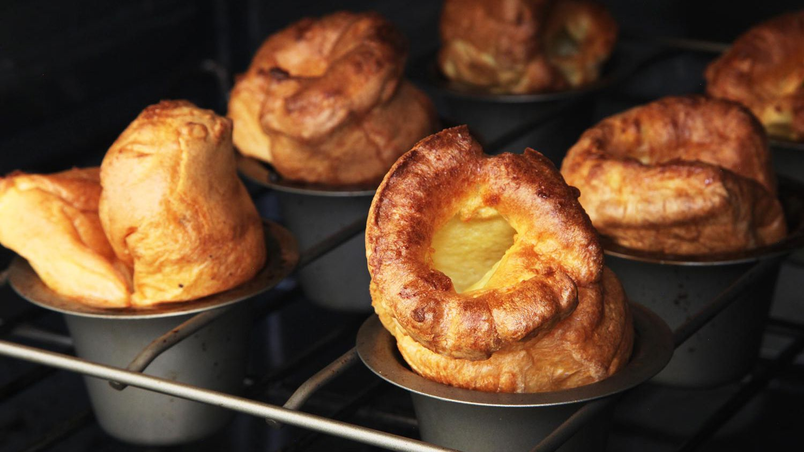

Yorkshire Pudding

Description
Yorkshire pudding is a delicious and versatile English pastry that can be eaten at any meal with sweet or savory food. Here's how to make it:
Ingredients
- 3 eggs
- 3/4 cup of milk
- 3/4 cup of flour
- 3/4 teaspoon of kosher salt
- 1/4 cup of butter or lard
Steps
- Preheat oven to 400 degrees.
- In a medium bowl, whisk together eggs, milk, flour and salt. Do not overmix. Allow batter to rest at room teperature for 30 minutes
- Add a teaspoon of fat to each cup of a 12-cup muffin tin and transfer to the oven to heat, about 5-7 minutes.
- Once hot, divide batter equally to fill the cups about halfway, and bake for 10-12 minutes or until golden brown and crisp.